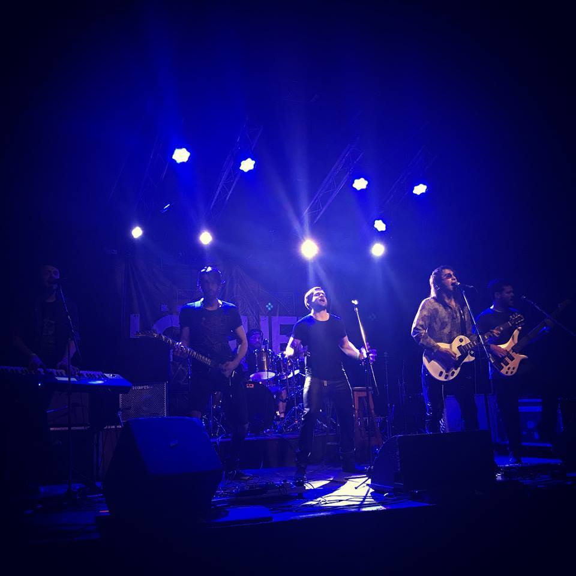

Soy Pablo, un cantante independiente!
En mis inicios me encontraba encasillado en géneros musicales relativos al metal/rock, formando parte de una
banda llamada AfterDreams (la cual cuenta con 3 discos publicados e importantes shows en vivo).
Actualmente soy solista, y como amante de la música en general, recorro
muchísimos géneros tanto en mis
grabaciones como en mis shows.
Me encantan las melodías que apuntan al corazón, y trato día a día de mejorar
mis interpretaciones para que los sentimientos se transmitan de la mejor manera posible!
En este sitio encontrarán novedades sobre mis actuaciones y muchas cosas
más!
Espero verlos pronto!
Pablo Galazzo
